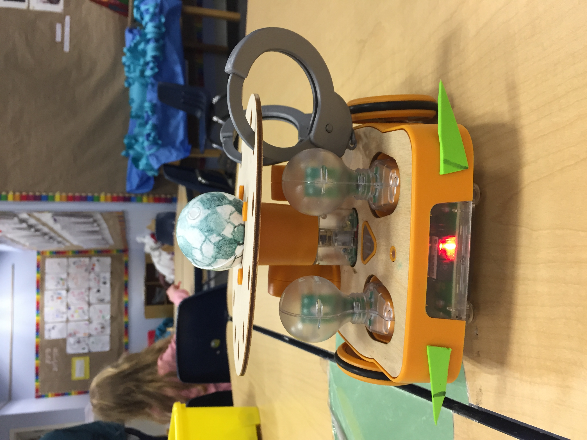
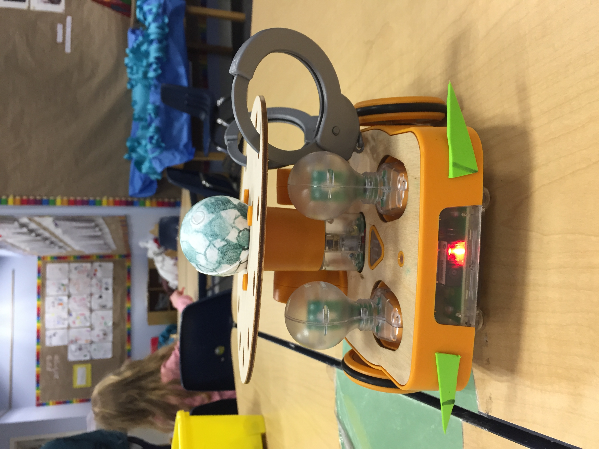

In my Technology Tools for Thinking and Learning class at Tufts, I had the opportunity to develop a curriculum using the KIBO robot and work with local kindergarteners. KIBO is a robot developed for 4-7 year olds with the hope of promoting early learning of programming concepts as well as creative expression. The curriculum development process had an initial pilot test followed by a more thorough design process and then a full implementation of the curriculum.
In the initial phase, we visited the Eliot-Pearson Children’s School for an hour-long session to practice teaching curriculum to young children. Our goal was to teach children how to use KIBO with basic programming principles such as loops. We also had them pick a country and research a traditional dance that they could recreate using KIBO.
Next, our group discussed the testing phase and expanded our curriculum. We wanted to continue the facilitation of cultural understanding and the potential for artistic expression using the robot. We wanted the project to promote communication, creativity, choice of conduct, content creation, and collaboration. We came up with the concept of KIBOlympics, based on the Olympic Games, which we believed lent itself well to what we hoped to teach. This curriculum would give children the opportunity for autonomy in decorating and programming their own KIBO as well as collaborating with other group members to have all of their KIBOs compete in different Olympic activities.

 

Curriculum Goals
Activities
Timeline
Total time: 4 hours
Hour 1: introductions, learning about the Olympics, brainstorming, introduction to KIBO programming
Hours 2 and 3: programming
Hour 4: decorating KIBO, final tests and debugging